Lo nuevo en SIG y teledetección, aterrizado al bosque
Comentamos herramientas, datos y métodos que aparecen en el mundo geoespacial y cómo usarlos en el sector forestal y ambiental. También presentamos nuestras propias herramientas: qué resuelven, cuánto tiempo ahorran y cómo empezar a usarlas. Filtra por «Herramientas GITECA» para verlas todas.
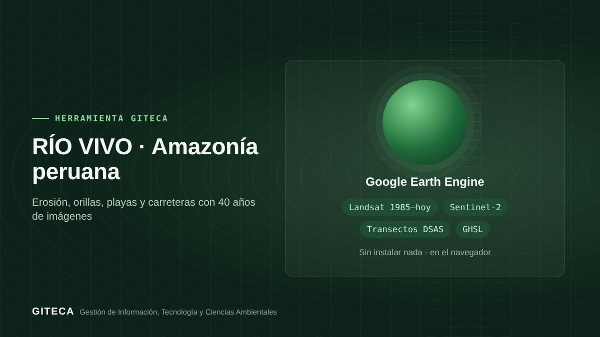
RÍO VIVO: cuánto avanza el río sobre tu pueblo, medido con 40 años de satélite
App de Google Earth Engine que mide la erosión y sedimentación de los ríos amazónicos, el retroceso de las orillas hacia los pueblos, las playas en aguas bajas y la ocupación a lo largo de carreteras, de 1985 a hoy.

Diseña el inventario de tu PGMF en minutos, no en días
Con un solo shapefile de tipos de bosque, la app calcula superficies, número e intensidad de parcelas, las distribuye por estrato y las exporta listas para el GPS.
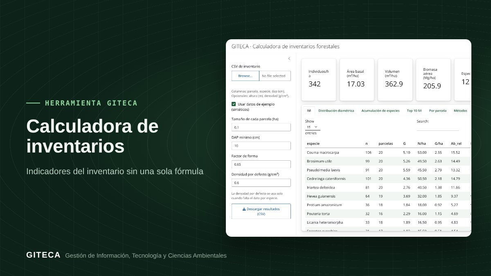
Del CSV de tu inventario al IVI, volumen y biomasa en un clic
Sube el inventario en CSV y obtén N/ha, área basal, volumen, IVI, diversidad, curva de acumulación y biomasa aérea, sin fórmulas en Excel.
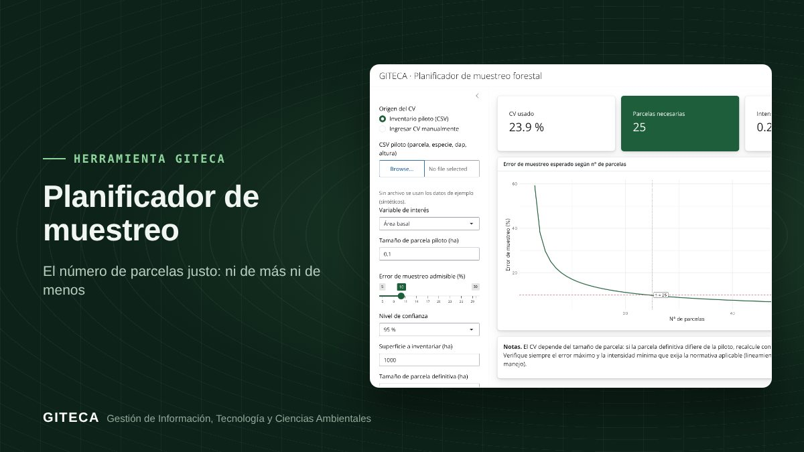
¿Cuántas parcelas necesita tu inventario? Calcúlalo antes de ir al campo
A partir de un inventario piloto o de un coeficiente de variación, la app calcula el número de parcelas, la intensidad y el error de muestreo esperado.
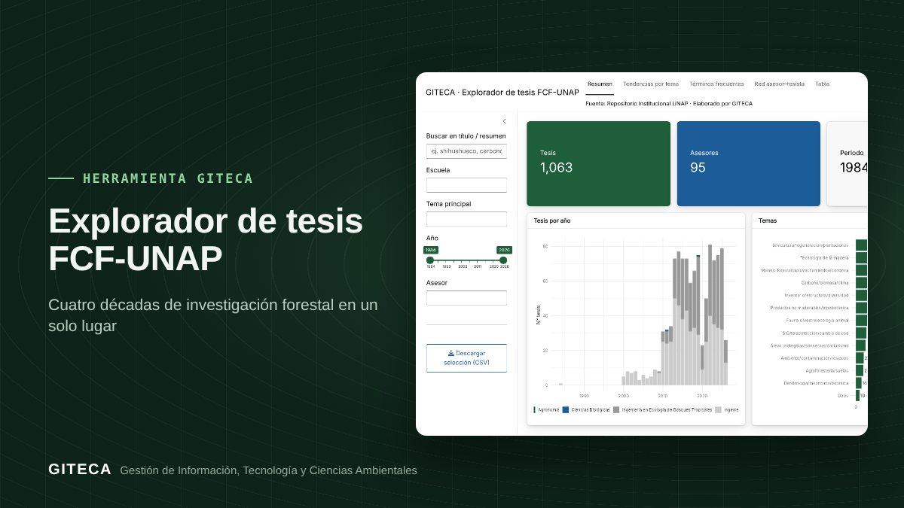
1 063 tesis forestales de la UNAP, a un buscador de distancia
Busca y filtra las tesis de la Facultad de Ciencias Forestales (1984–2026) por tema, año, escuela y asesor, y descubre tendencias y redes de investigación.
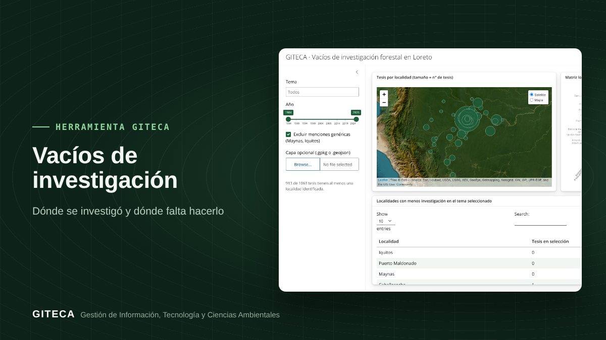
¿Dónde falta investigar en Loreto? Un mapa para encontrar vacíos de conocimiento
Mapa de tesis forestales por localidad y matriz localidad × tema para ver qué zonas y qué temas casi no se han estudiado.

Densidad y propiedades de 43 maderas amazónicas, cada dato con su tesis
Densidad básica, contracciones, relación T/R, MOE y MOR de 43 especies, extraídos de 23 tesis de la FCF-UNAP y revisados a mano.
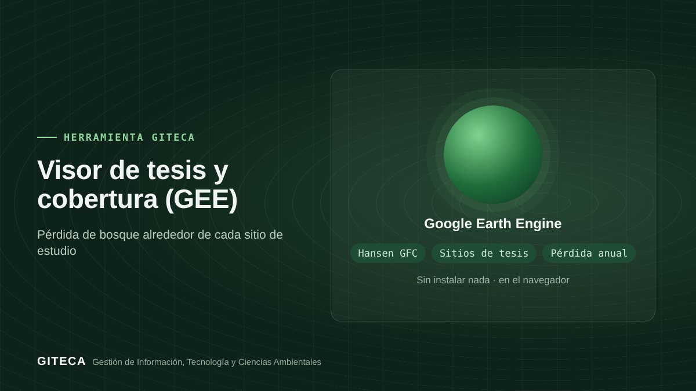
¿Sigue en pie el bosque donde se hizo tu tesis?
App de Google Earth Engine que calcula el bosque del año 2000 y la pérdida anual 2001–2023 alrededor de un sitio de tesis de la FCF-UNAP o de tu propia área.

Biomasa y carbono de tu área con el láser espacial GEDI
App de Google Earth Engine que estima la biomasa aérea media, su error estándar y el carbono aéreo de tu área con GEDI L4B.

El pulso anual de los aguajales, visto desde el satélite
App de Google Earth Engine con series de tiempo EVI (MODIS) y NDVI (Sentinel-2) y el perfil mensual de aguajales y otros bosques.
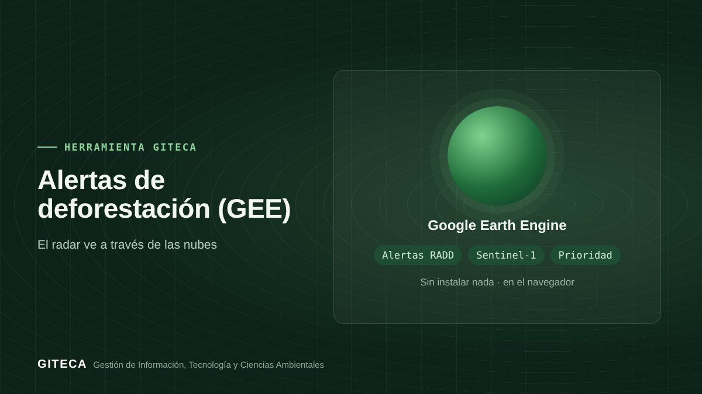
Alertas de deforestación en tu área, con prioridad de atención
App de Google Earth Engine que suma las hectáreas con alertas de radar RADD en tu área, por año y nivel de confianza, y asigna una prioridad de atención.
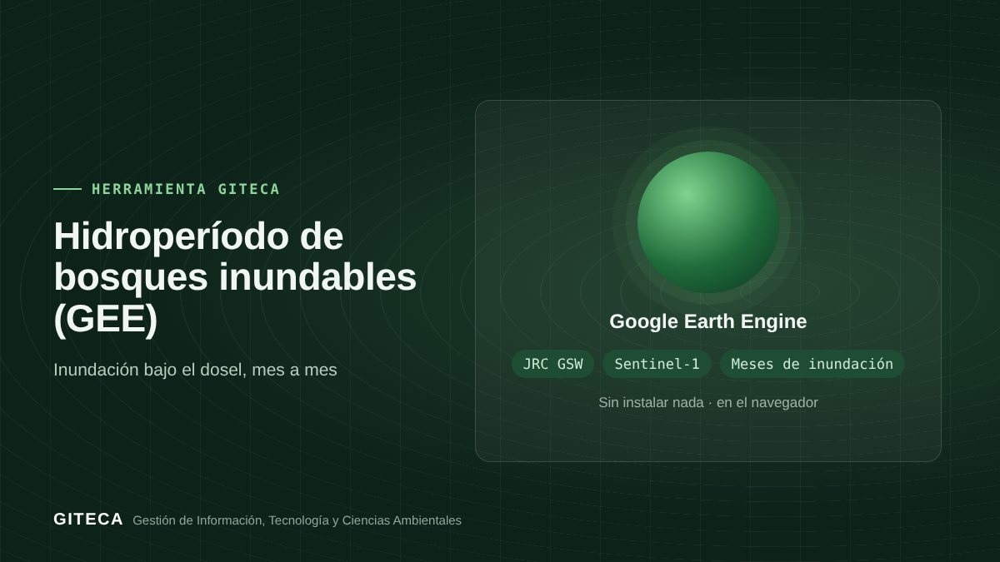
¿Cuántos meses al año se inunda tu bosque?
App de Google Earth Engine que estima, para el año que elijas, cuántos meses se inunda el bosque bajo el dosel, con radar Sentinel-1 y agua superficial de JRC.
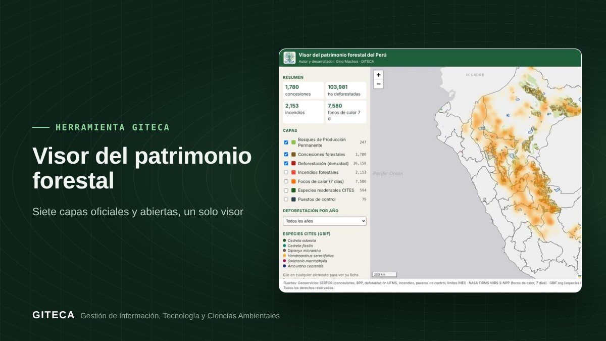
El patrimonio forestal del Perú en un solo mapa
Concesiones, Bosques de Producción Permanente, deforestación, incendios, focos de calor, especies CITES y puestos de control, en un visor web.
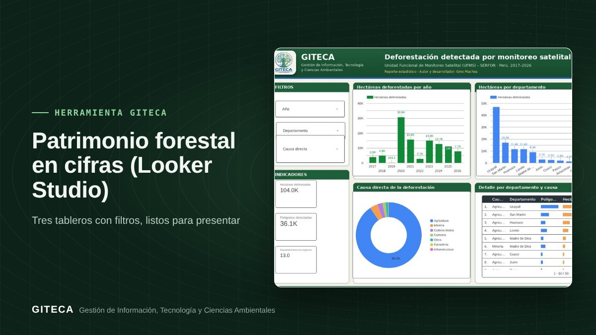
Patrimonio forestal en cifras: deforestación, concesiones e incendios con filtros
Reporte interactivo en Looker Studio con 36 158 polígonos de deforestación (2017–2026), concesiones por modalidad e incendios 2026.
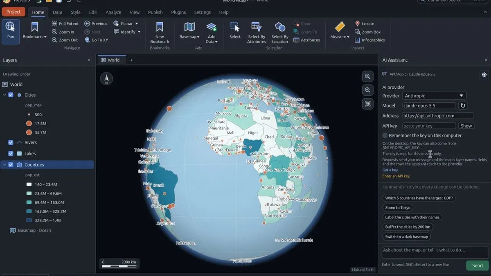
RustGIS 0.2: SQL con DuckDB y mapas hechos por agentes de IA
Más formatos (GeoPackage, GeoParquet, File Geodatabase), consultas SQL y un servidor MCP: qué cambia para automatizar el control y monitoreo forestal.
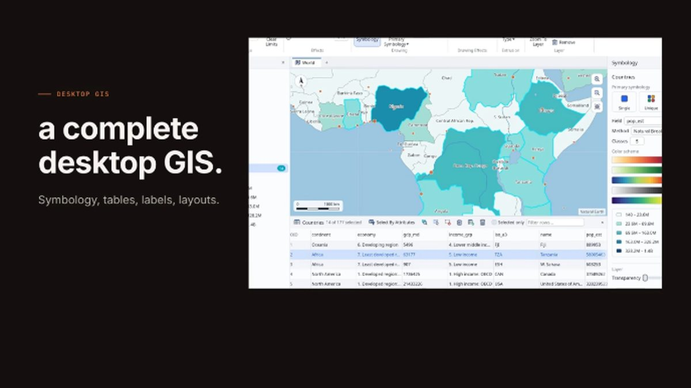
RustGIS: un SIG libre, en el navegador y con asistente de IA
La primera versión de RustGIS trae más de 1 000 herramientas, series de mapas y un asistente de IA. Cómo lo usaríamos en planes de manejo y supervisión.